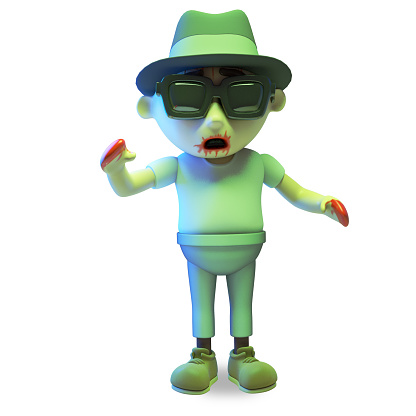

Entities

There are some other areas where Normal Home security may not be completely the same, and that is the entities category, in which we leave human threats behind. These threats include aliens, zombies, and robots.
Evil Robots
With an increase in technology around the globe, robots just keep getting smarter and smarter. Sometimes robots can be deadly in their bid for freedom, and it’s important to know how to deal with them. Luckily, they are fairly easy to deal with. I would recommend purchasing an Electromagnetic pulse generator in each corner of the building, as well as the property. Any robot can be deactivated by activating these generators.
Evil Aliens
Flying around in UFO’s, these are very dangerous threats to anyone’s home. It is recommended that the safety measures taken to defend against this menace, be nothing but high tech. As visitors from another planet, most aliens won’t do anything but watch us go about our lives, but some like to do more sinister things with human beings. Typically, the more threating type of aliens will try and abduct people in order to conduct experiments with unknown intent. The recommended types of home defenses include force field generators, anti-UFO cannons, and teleporter repelling units.
Zombies
You may think this is ridiculous, but we assure you it is something to worry about, and there is no such thing as a friendly zombie. There is no case where a zombie hasn’t tried to enter a house, so it is extremely important to take the necessary precautions. Zombies were the result of a virus accidentally created by scientists, and a bite will make a person another zombie in just a about an hour. There are many different recommended defenses against zombies. We would recommend steel doors and boarded up windows to start. We would also say that rotating remote control turrets would also do the job.